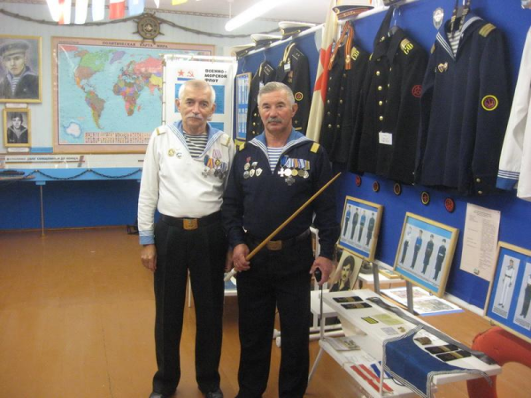
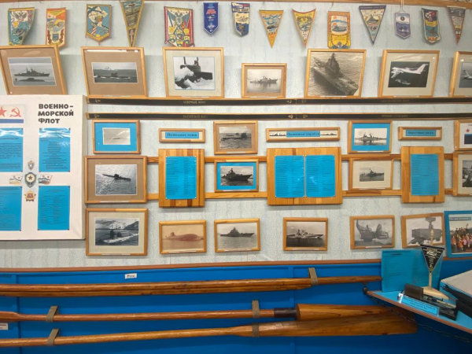
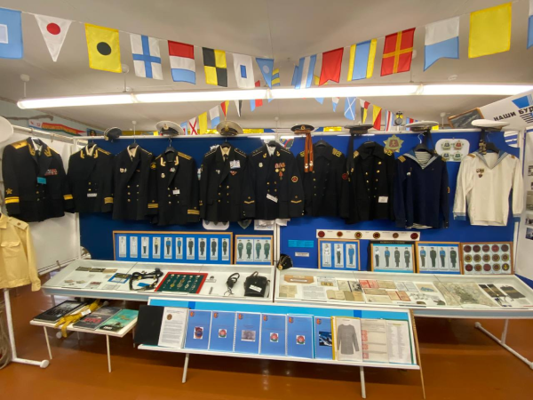

В 1973 году, окончив 3-ий учебный отряд подводного плавания в г.Кронштадте, я был направлен на службу во 2-ую Камчатскую флотилию атомных подводных лодок по специальности рулевой-сигнальщик (боцман). Служил на атомной подводной лодке (АПЛ) 667А проекта, участвовал в двух дальних походах (87 суток – 1 поход). Демобилизовался в 1975 году и стал работать на спасательной станции – водолазом спасателем, затем начальником станции. В 1976 году в День Военно-морского Флота в присутствии 4 военных моряков – главного старшины Мешкина С.И., главного старшины Касперовича В.В. и двух лейтенантов с Северного и Тихоокеанского флотов - впервые был поднят флаг ВМФ на Лидском озере. Этот день можно считать днем создания у нас в г.Лида общественной организации военных моряков, правда пока неофициально.
Спасатели квартировались в здании ДОСААФа и там были и шестивесельные ялы, которые ходили под парусом. Все это когда-то списывалось. Обычно при списывании, чтобы не сжигать ничего нужного, я договаривался с начальником Марфиным Ф.С. и забирал к себе вальковые весла, рули, кнехты, утки, рыбницы, т.е. элементы устройства Яла-6. Общаясь с военными моряками Лидчины и показывая им имеющиеся у меня предметы, относящиеся к флоту, получал от них различные элементы военно-морской формы и различных документов и предметов. И так, что свое, кто что дал, где достал – набиралась хорошая коллекция. И пошла работать мысль о создании музея.
Живя в частном секторе по ул.Хасановской, мы с сыном Денисом очистили сарай, оштукатурили, утеплили, вставили окна, поставили печь, потолок отделали шалевкой и получилась «кают-компания» – красный уголок с иконами, так как я считаю - море с Богом не разделимо (как на старых русских кораблях). По стенам развесили вымпелы, фотографии, якоря, морское снаряжение, флаги, организовали небольшую морскую библиотеку. Получилась прекрасная «кают-кампания», которая в 1998 году была освящена отцом Дмитрием, иереем Свято-Георгиевского храма. В эту «кают-кампанию» пошли экскурсии со школ, других учебных заведений и организаций Лидского района. Её посетили 4 командира атомных подводных лодок (однокашники нашего товарища капитана 2 ранга Гузеева М.В.), в том числе Герой России капитан 1 ранга Зайцев А.Г.. Гостями «кают-кампании» были Лидские поэты Макаревич П.Г. и Васько В.В.. 27 апреля 2009 года официально зарегистрирована Лидская районная организация военных моряков в составе Республиканского общественного объединения «Союз военных моряков». С созданием официальной организации нам надо было как-то расширяться, благо экспонатов прибавлялось. В райисполкоме предложили помещение в СШ №16, но с ремонтом там мы бы не потянули из-за большого объема работ.
Так как я хорошо знал директора СШ №10 Семенова В.Н. и часто с ним общался, однажды в разговоре он предложил нам в школе кабинет довоенной подготовки. Посмотрели мы его - всем понравилось. И начались работы – меняли обои, все перекрашивали, делали стеллажи на цепях (подвесные койки - как на кораблях). Заказали огромную картину «Алые паруса» художнику Пастухову А.Н.. Помещение разделили пополам стендами. Придумали вместо окон сделать иллюминаторы, так как от солнечных лучей выгорают экспонаты. Капитан 2 ранга Демидик Н.И. изготовил макет пушки петровских времен в натуральную величину. Морской пехотинец Искив В.Н. изготовил макет смотрового сигнального маяка. Из Пинска привезли корабельный якорь Холла весом 260 кг и установили у входа в школу. На стенах разместили портреты Лидских героев-подводников – Виктора Кузьмицкого и Сергея Нежутина. На стойках развешали военно-морскую форму. На подволоке – набор сигнальных флагов расцвечивания сделаны работниками СШ-5 (директор Кашко А.М.). Старшина 1 статьи Шавела В.В. вставил новую входную дверь, подаренную заводом ПДО (ныне ОАО «Лидастройматериалы»). В работе по созданию музея участвовали практически все члены организации. Основную работу выполняла постоянная рабочая группа в составе гвардии старшины 1 статьи Трапило Р.Б., капитана 2 ранга Гузеева М.В.. главного старшины Касперовича В.В., старшего матроса Дульцева В.И. (наш художник и реставратор), мичмана Картовицкого А.А.. Работали по 2-3 дня в неделю.
Официально открытие музея с разрезанием ленточки состоялось 20 февраля 2013 года. На открытии музея присутствовали Лидский военный комиссар Раманенко В.В., заместитель председателя Лидского райисполкома Пранюк В.Ф., руководители отдела внутренних дел Лидского райисполкома, директор СШ №10 школы Семенов В.Н., члены Лидской общественной организации «Общество долголетия», учащиеся СШ №10, местное телевидение. Музей освящен протоиереем благочинным отцом Ростиславом. В 2016 году музей был принят на баланс СШ №10. Музей функционирует и в настоящее время. В нем регулярно проводятся экскурсии, как для учащихся школ, так и для общественных организаций и всех желающих. Музей продолжает развиваться – пополняется новыми экспонатами, которые позволяют лучше узнать историю флота и особенности службы военных моряков.
  